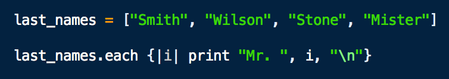

return jeffKeslin
feelin loopy

Writing a loop in a computer program allows you to execute a particular block of code a predetermined number of times, or until a certain condition is met. Ruby has a vast array (no pun intended) of methods with which to create loops. For starters, there's: Array#each, Array#select, "while", "do", "for in", "until" and even "retry." Which one you chose is up to you and depends on the conditions driving your iterations. Let's look at some basic examples of a couple of these to get a feel for how and when they're used.
Let's start with the classic While Loop which has a similar form in the JavaScript language. In the example below the condition after the while loops tell the computer to execute the following code for as long as the value of x is less than 5. In this case, it prints the message, "This will print 5 times!", you guessed it, 5 times.

The command "until" is differs from the while loop because it runs while the condition given is FALSE. Check out the example below. This will still print the message 5 times, but now stops the loop when x has become 5, therefore making the condition no longer false.


Now, let's look at a loop that iterates over the elements of an array. Let's say we had an array of last names and wanted to add the prefix "Mr." to each one. For this we could use Array#each. Take A look at the example below.
The result should look like this:

With so many options for writing loops in Ruby this is only the tip of the iceberg. Check out the Resources page for more Ruby info or tools
And happy coding!